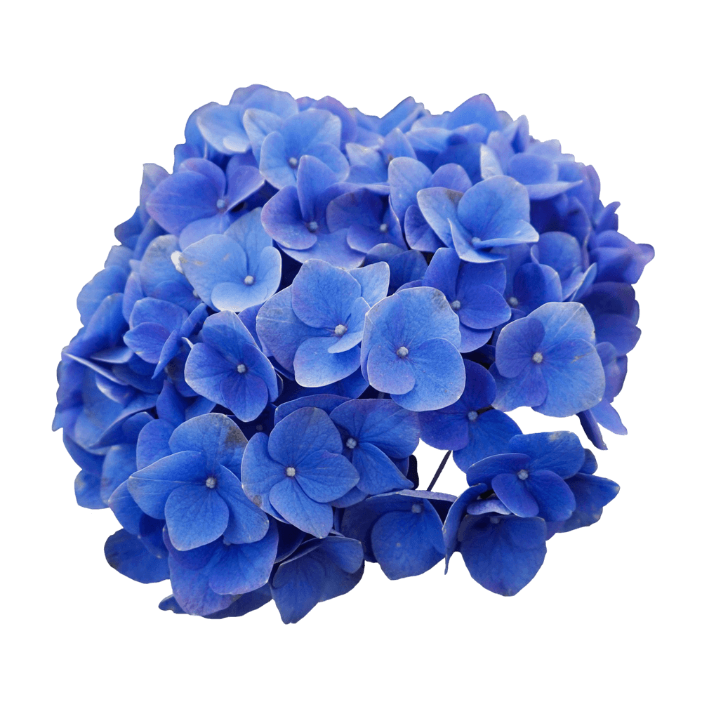

Halant is a typeface family supporting the Devanagari and Latin scripts. This is an Open Source font family, first published by the Indian Type Foundry in 2014.
The Devanagari glyphs in the Halant project were designed by Vivek Sadamate and Ninad Kale. The Latin is by Jonny Pinhorn. The Indian Type Foundry first published Halant in 2014.
Font available from Google Fonts.
Hydrangea are large globes of flowers that cover a shrub in summer and spring. Hydrangeas are unique in that you can control their colour. Colours include blue, pink, red, purple and white.
The name Hydrangea comes from the Greek words “hydor” meaning water and “angos” meaning vessel. Which together roughly translate to “water barrel”. This is because of the fact that Hydrangeas are notorious for needing lots of water and the cup shaped flowers.
Hydrangeas can symbolize many different things, depending on where around the world and their culture. The flower represents gratitude, grace and beauty. It also radiates abundance because of the lavish number of flowers and the generous round shape. The Hydrangea's colours symbolise love, harmony and peace.